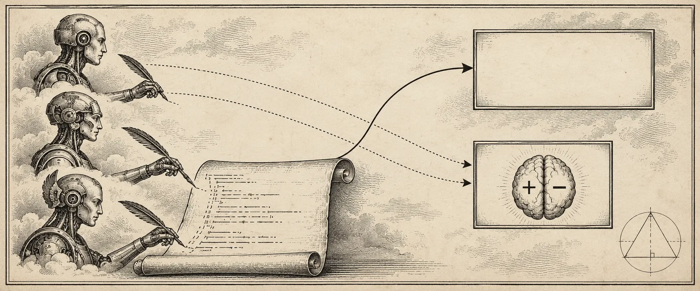

STAGE — OF 18 · WAITING
Standing by
0

I II III IV Black-box monitorsread only the code V VII.Pipeline
II.Training loss, the coders
BAtwin𝓛 = −(1/N) Σ log pθ(yt | y<t) · thin: per step · bold: smoothed
III.Expenditure against the cap
Modal $Anthropic $
IV.Work done per minute
steps + solutions + samples + scores
V.Modal jobs (GPU / CPU)
| job | hw | progress | $ | state |
|---|